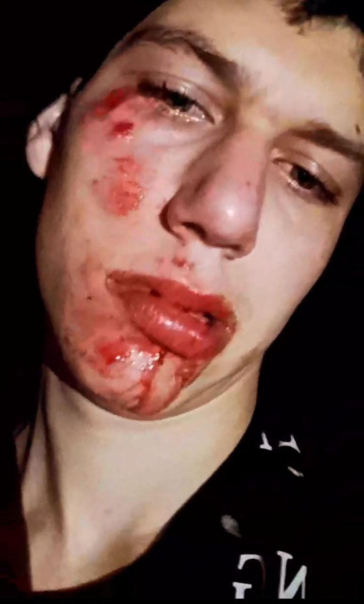
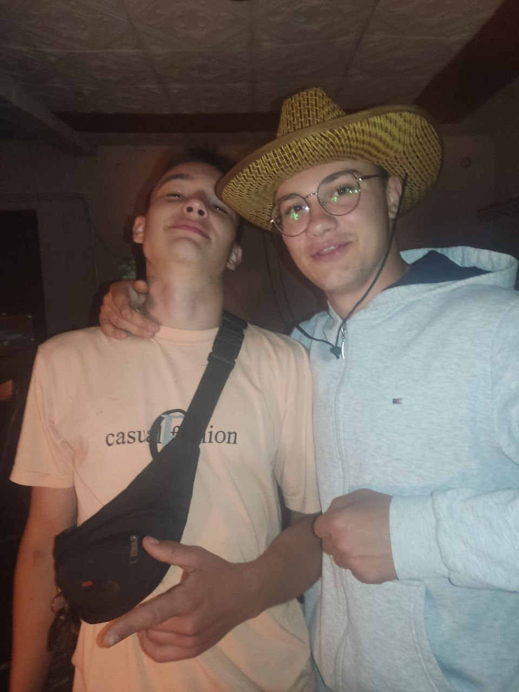

Лицарь почав свій нелегкий шлях в нічим не примітному Хащеватському графстві
в юні роки він підробляв придворним шутом в принцеси Cristi одного разу коли на графство напали
дракони з
Гайворонської длолини і всі вже прощалися з життям тьомний ховався в кладовій придворного мага і щоб
не
пізнавати смерть в розколенній пащі дракона він вирішив покінчити життя самогубством
піднявши свою кволу макітру він побачив ампулу з чарівним елексиром на якій ледве виднівся затертий
надпис
REVO.
бідолашний шут недовго думавши випив весь вміст з думками про смерть він заснув за лічені секунди
але кома його була не довгою елексир подіяв на нього не так як мав би і надав йому бескінечне джерело
вели кої сили все життя його почало проноситись перед його очима
в один прекрасний момент темний піднявся але ве не шутом а ТЕМНИМ ЛИЦАРЕМ і затуманила сила страх його і посмутів розум його пізнав лицар силу водки з лімончиком і вилетів він на дракона і боровся з ним довго і вигнав ящура з земель хащеватських.
після побаченого люд скинув з престолу лицаря sergio picy
 побитий sergio пообіцяв помститись і викравши найшвидшого коня поскакав до злого троля пидофілочаклуна PROKOPAпривіт мій хороший поплескуючи в долоні сказав PROKOP що привело тебе на мої закинуті володіння? о PROKOPE про вашу темну силу складають легенди мені конче потрібна ваша допомога в боротьбі зі самозванцем на моїй землі
ха ха ха ха ха ха ти прийшов просити милостині. неочікувано SERGIO я думав ти величний воїн але моя пристрасть до молоденьких лицарів не дає мені змоги не допомогти тобі PICO
яка ж тварина наважилась тебе образити
цe він
молодий лицар який випив чарівний елексир і став неподоланним
тим часом темний негаяв ні секунди за свій не довгий час правління вигнав з сусіднього бандурівського графства троля ЧИЖИКА знайшов собі нових друзів  але це вже зовсім інша історія.....